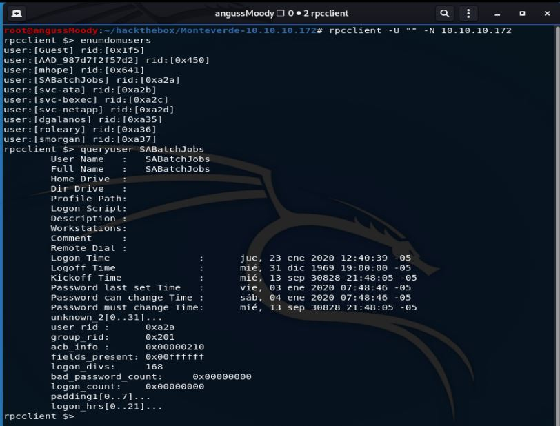

HTB Máquina Monteverde
angussMoody
- Sistema: Windows
- Puntuación: 4.3
- Categoría: Media
• Usuario:
Realizamos un escaneo, para saber que puertos y que servicio están corriendo en esta máquina y nos encontramos con servicios interesantes como Kerberos, ldap, msrcp y además vemos que esta máquina está bajo AD, como hemos realizado en máquinas anteriores podemos realizar una búsqueda de usuarios de varías maneras, podríamos hacer uso de sparta o enum4linux que nos traen mucha información, pero hoy vamos a utilizar una herramienta un poco más específica para el caso.
Vamos a hacer uso de la Herramienta rpcclient y corremos el comando con la opción -U “” porque no tenemos ningun usuario hasta este momento y -N para la opción de No-pass, de esta manera ingresamos, utilizamos enumdomusers, para enumerar los usuarios y nos encontramos con 10 usuarios, así que vamos a ver la información de cada uno de ellos con queryuser, encontramos que en el tiempo de inicio se sesión hay 3 usuarios con fechas muy recientes mhope, SABatchjobs y ADD_987d7f2f57d2 y ya con esta información vamos a ver que podemos encontrar por medio de smbclient.

Probando los 3 usuarios que vimos anteriormente, vemos que con SABatchjobs y de password el mismo nombre de usuario tenemos conexión a algunos directorios
Vamos a enumerar y nos encontramos que dentro de users$ se encuentran 4 directorios de usuario.
Dentro del directorio mhope nos encontramos con un archivo llamado Azure.xml, así que con get nos descargamos este archivo, para revisar de que trata.
Leyendo el archivo nos encontramos con un password, vamos a probar una conexión con evil-winrm como hemos realizado en máquinas anteriores
y así obtenemos nuestra primera flag .
• Escalada de Privilegios:
Enumerando la máquina nos damos cuenta que está corriendo Azure, así que tratamos de encontrar una vulnerabilidad conocida para realizar el escalamiento de privilegios

Revisando un poco en la google, y después de varias pruebas, nos encontramos con un script que nos da las credenciales de administrador que necesitamos para la escalación de privilegios. Modificamos un poco el script y lo subimos con la Shell que tenemos en este momento.
Corremos nuestro script y obtenemos las credenciales de administrador.

Ahora solo queda probar una conexión en evil-winrm
De esta manera encontramos la flag del Root.
Saludos Fr13ndS HTB